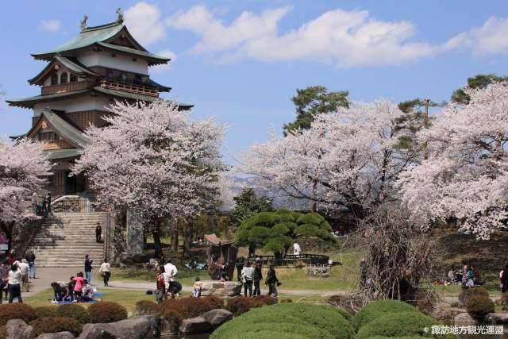

Wij hebben heel veel verschillende soorten reizen waar u uit kunt kiezen. Onze reizen zijn verdeeld in de continenten Europa, Amerika en Azie.
Meeste reizen zijn in Europa, maar we hebben ook een paar reizen naar Amerika en Azie.

Wil je op reis en ook verschiilende culturen leren kennen? Dan kan je het beste naar Aziatische trip. Daar zijn verschillende culturen in verschillende landen.
Alle landen verschillen zo erg van elkaar qua clturen maar ook qua landschappen.
Er zijn ook heel veel mooie gebouwen en tempels die je in Europa nooit zult tegen komen.
De Aziatische cruises die wij hebben maken veel minder stops. Er moet veel afstand gelegd worden dus daarom zullen er meerdere dagen zijn dat we geen stops kunnen maken. U zult daarom veel tijd doorbrengen op het schip. Wij hebben daarvoor heel veel leuke activiteiten die u kunt doen op het schip. Voor meer informatie over de activiteiten kunt u hier heen.
De Azatiche reizen gaan naar de landen:
- China
- Japan
- Indonesie
- Cambodja
- Thailand